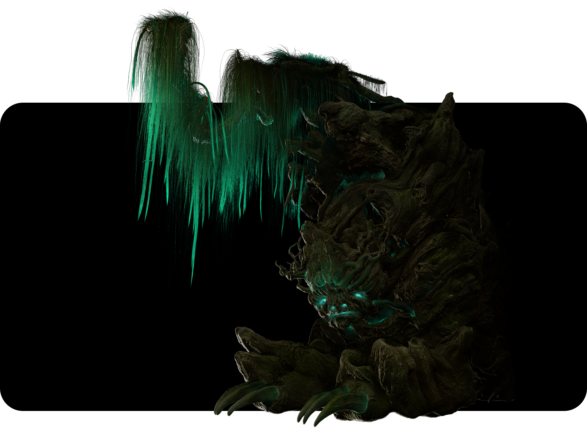
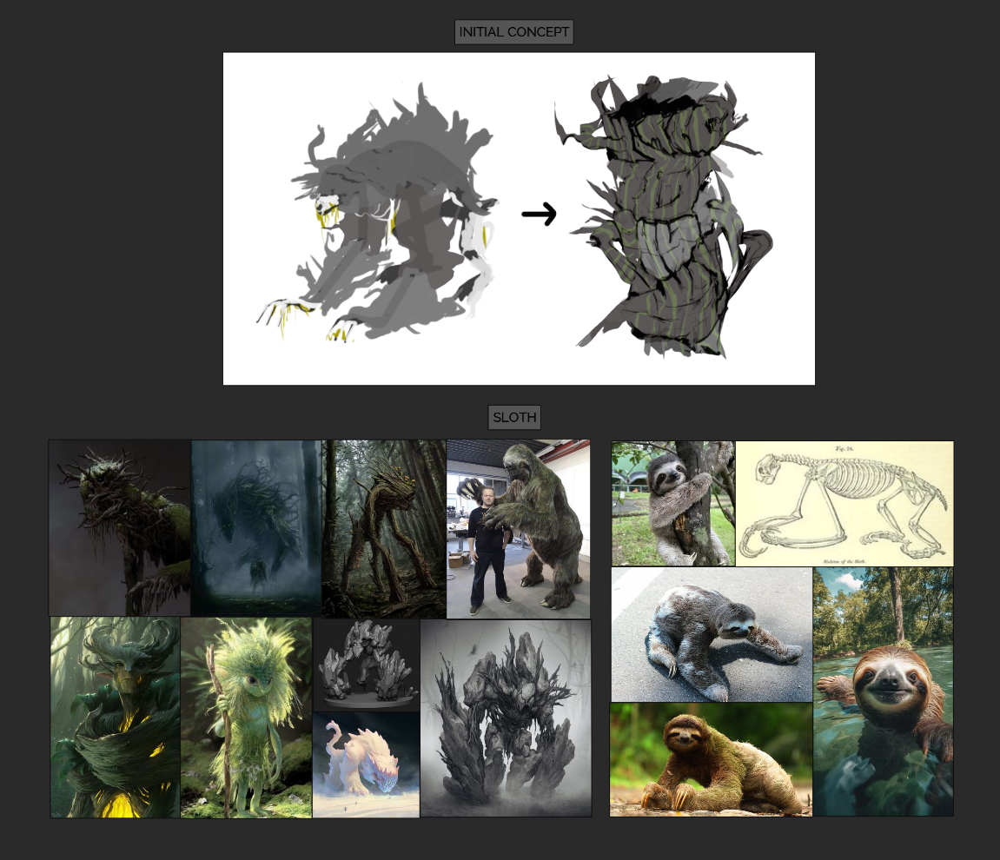
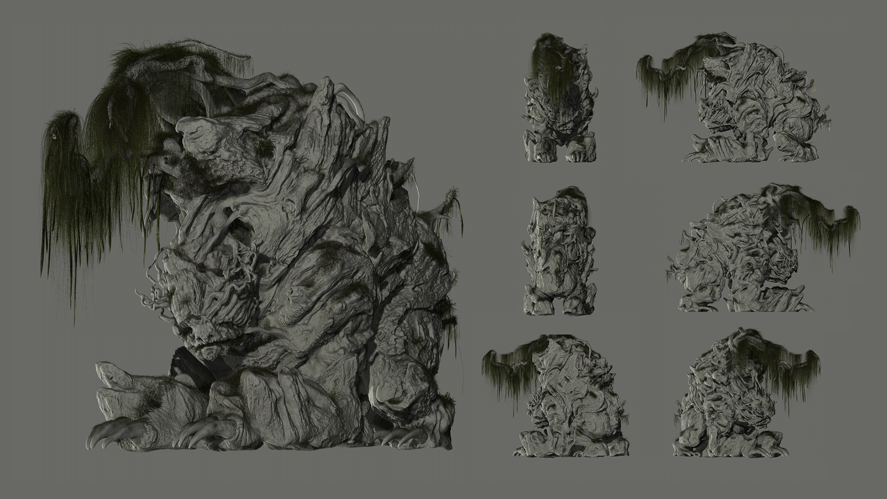
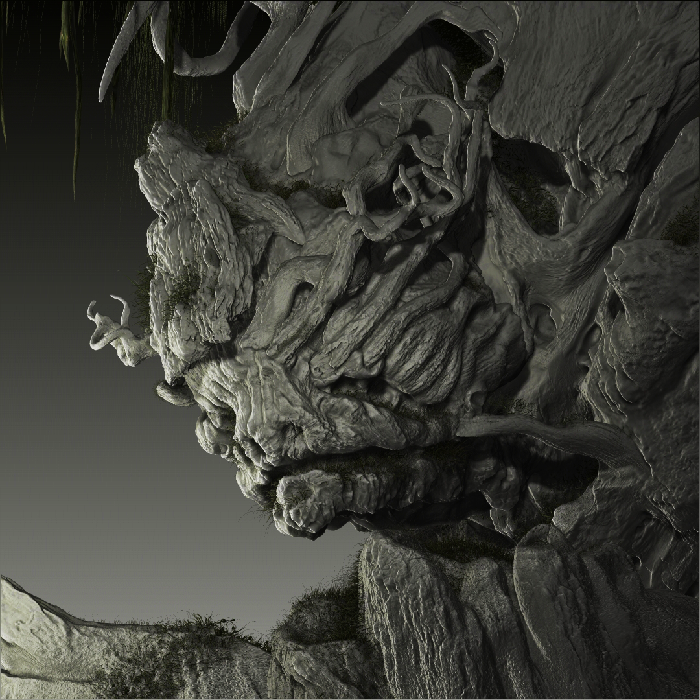
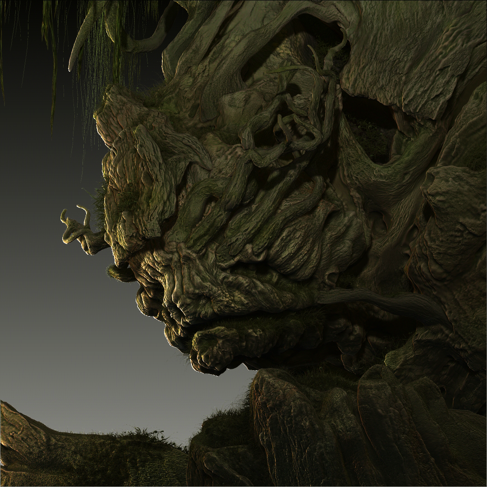
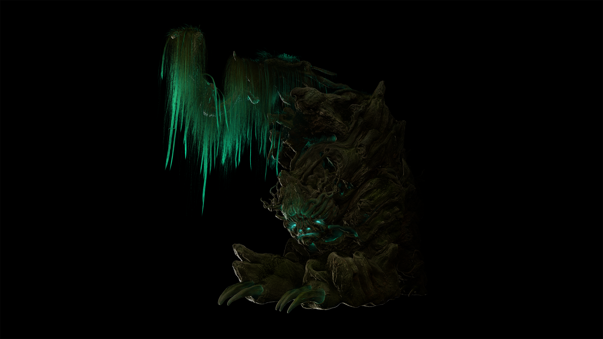

Project details
References
Early exploration began with a personal concept—a tree trunk morphing into a sloth—which I later abandoned in favor of a cleaner silhouette that better reinforced the guardian’s presence.

Perspective views

Without / with textures
Drag the vertical line to reveal the textured version beneath.


Compositing
Final frame rendered in ZBrush and composited in Photoshop.

Turntable (360°)
Stages shown (in order): Low-poly → High-poly detailing → Texturing → Texturing + foliage.
Software used